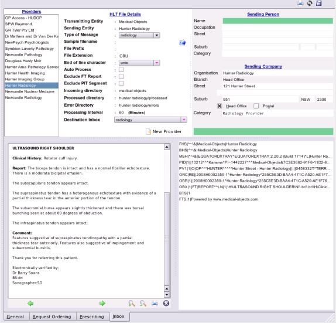

Preferences
To be able to import things such as pathology, radiology and reports from specialists into EasyGP, the program must first know where these files will be located in your system and how they should be handled. The image below shows the screen layout of this section.

Though this looks complex, it's not really. Using this you will be able to:
- Keep a list of everyone sending you electronic messages
- Create a directory structure for incoming messages
- Preview a sample hl7 message from your provider
- Exclude segments you do not wish to view
- Examine the hl7 content of a sample file